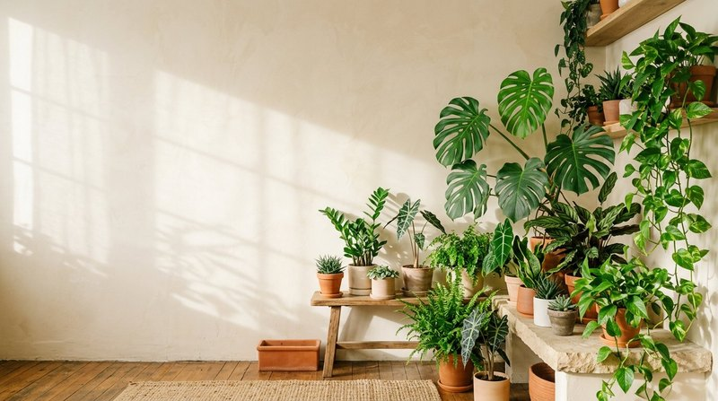

Базовый уход · 5 мин чтения
Удобрение для комнатных растений: как выбрать и применять
Комнатные растения живут в ограниченном объёме грунта, поэтому запас питания со временем истощается. Но удобрение не заменяет свет, подходящий полив и здоровые корни: подкормка помогает только тогда, когда совпадает с потребностями растения.
Материал обновлён 24.10.2026 · Справочная информация, не заменяет инструкцию на упаковке.

Как выбрать подкормку для дома
Начните с назначения на этикетке: универсальное средство удобно для коллекции разных растений, а специализированные формулы учитывают особенности отдельных видов. Для домашнего сада важны не рекламные обещания, а состав, форма выпуска, дозировка и понятная инструкция.
Жидкий концентрат разводят в воде и вносят с поливом или опрыскиванием, если такой способ указан производителем. Он удобен тем, что позволяет приготовить нужный объём рабочего раствора. Учитывайте, что недавно купленный грунт иногда уже содержит стартовое питание.
Когда подкармливать комнатные цветы
Ориентируйтесь на активный рост: появляются новые листья, побеги или корни. В период покоя, при недостатке света или после сильного стресса растению может требоваться меньше питания. Универсального календаря для всех видов нет — график зависит от растения, сезона, грунта и инструкции конкретного удобрения.
Не подкармливайте пересушенное, заболоченное или явно больное растение, пока не выяснили причину проблемы. Подкормка не лечит вредителей и заболевания. Сначала восстановите подходящие условия, а затем возвращайтесь к удобрению по этикетке.
Как вносить безопасно
Отмеряйте средство точно, не увеличивайте концентрацию ради более быстрого эффекта. Раствор вносите по влажному субстрату, если так предписывает инструкция; после полива сливайте лишнюю воду из поддона. Для опрыскивания проверьте, что оно разрешено на упаковке, и не оставляйте капли на чувствительных цветках.
Универсальный концентрат «Семяздрав» в описании продавца предназначен для комнатных растений, цветов и рассады; указанный расход — 250 мл на 250 л раствора. Точный способ и частоту применения сверяйте с актуальной этикеткой.
Система ухода: свет, вода и только потом подкормка
Удобрение — третий элемент ухода после света и полива, а не замена им. Растение у северного окна зимой почти не растёт и почти не расходует питание: тот же раствор, который летом усваивался за неделю, будет накапливаться в грунте. Поэтому перед очередной подкормкой полезно задать три вопроса: хватает ли растению света для роста, не стоит ли горшок в постоянно мокром или, наоборот, пересохшем субстрате и есть ли признаки нового роста — свежие листья, корни или побеги. Если хотя бы на один вопрос ответ «нет», сначала исправляют условия.
Удобная домашняя система выглядит так: раз в неделю вы осматриваете коллекцию и поливаете по потребности каждого горшка, а подкормку привязываете не к дате в календаре, а к активному росту. О том, как выстроить ритм, подробнее рассказано в материале о частоте подкормок комнатных растений, а математика раствора разобрана в статье как развести жидкое удобрение. Такой подход снимает главный вопрос новичка — «не пора ли уже полить с удобрением на всякий случай».
- свет: растение стоит там, где его вид реально растёт, а не выживает;
- вода: субстрат увлажнён равномерно, лишняя вода слита из поддона;
- рост: видны новые листья, побеги или корни;
- корни: из дренажных отверстий не пахнет затхлостью, грунт не закис;
- этикетка: доза и способ внесения сверены именно с вашим средством.
Типичные ошибки домашних садоводов
Самая частая ошибка — увеличивать концентрацию «для надёжности». В ограниченном объёме горшка избыток солей не уходит вглубь почвы, как в саду, а остаётся у корней и со временем обжигает их края. Вторая ошибка — подкармливать больное или пересушенное растение в надежде его оживить: если причина в корнях, вредителях или поливе, удобрение только добавит нагрузку. Сначала диагностика, потом питание — этот порядок подробно разобран в статье почему желтеют листья у комнатных растений.
Третья ошибка — смешивать несколько средств одновременно или чередовать их без учёта суммарной дозы. Выберите одно основное удобрение и ведите простой журнал: дата, растение, концентрация. Для универсального концентрата «Семяздрав» производителем указан расход 250 мл на 250 л раствора; состав и назначение разобраны в блоке о продукте на главной странице. Журнал на телефоне или на стикере у лейки через месяц покажет реальную картину лучше памяти.
Частые вопросы
Нужно ли удобрять комнатные растения зимой?
Не обязательно. Смотрите на рост и освещение: активно растущее растение и растение в покое требуют разного ухода. Следуйте инструкции продукта и не подкармливайте по одному лишь календарю.
Можно ли использовать одно удобрение для разных цветов?
Универсальное средство может подойти нескольким видам, если эти виды перечислены в инструкции. Для капризных или чувствительных растений сначала проверьте указания производителя.
Можно ли подкармливать сразу после покупки растения в магазине?
Лучше дать растению одну-две недели на адаптацию к свету и поливу дома. Транспортировочный грунт нередко уже заправлен питанием, а смена условий сама по себе стресс. Начните с обычного полива и осмотра на вредителей.
Что важнее для роста: удобрение или пересадка в свежий грунт?
Это разные инструменты. Свежий грунт даёт корням место и стартовое питание, удобрение поддерживает растение между пересадками. Истощённый, уплотнившийся субстрат подкормками не исправить — тогда нужна пересадка.